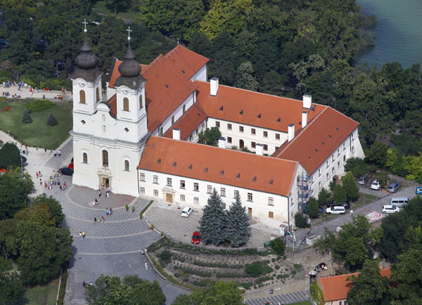
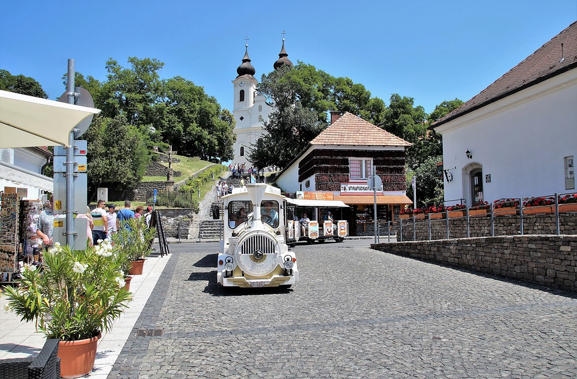
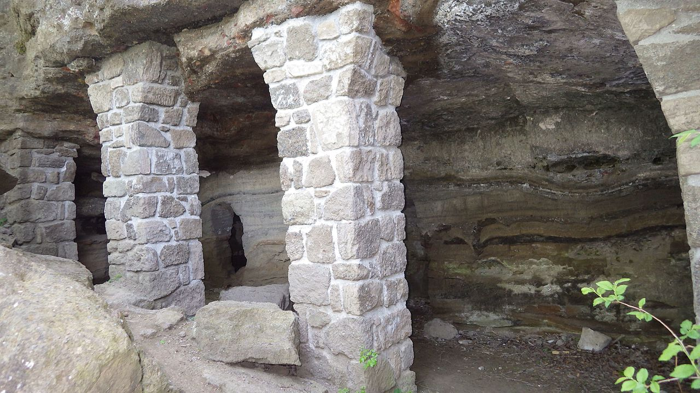
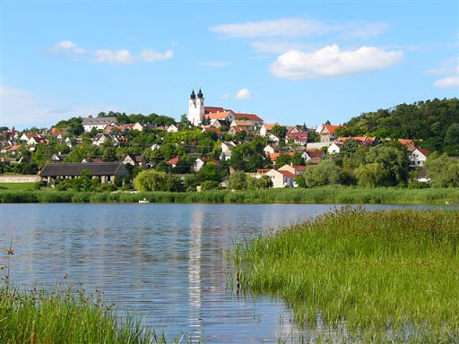
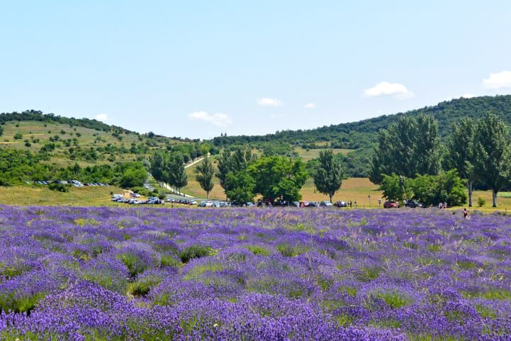

| Balatonfured | Siófok | Keszthely | Badacsonytomaj | Balatonalmádi | Tihany | Káptalanfured |
|---|
Tihany község Veszprém megyében, a Balatonfüredi járásban. Magyarország egyik legszebb fekvésű települése, látványos táji és természeti adottságokban bővelkedő község a Balatonba nyúló Tihanyi-félszigeten. Híres, még ma is meglévő nevezetessége a helynek a tihanyi visszhang vagy echo, amely a tihanyi apátság és a Visszhang-domb között keletkezett akkor, amikor még épületek a hang szabad oda-vissza terjedését nem gátolták. Tiszta, csendes időben még most is megfigyelhető, elsősorban télen. Nevének eredete valószínűleg a szláv csend („tiho”) szóban keresendő. Szent István király korától 1946-ig Zala vármegyéhez tartozott.
Tihany a Balatont két medencére osztó Tihanyi-félszigeten fekszik. A tájat vulkanikus erők formálták évmilliókkal ezelőtt; ennek ma is látható nyoma többek között a két kaldera, melyekben a Belső- és a Külső-tó kialakult. A vulkanikus utótevékenység több mint száz gejzírkúpot alakított ki, melyek közül a legismertebb az Aranyház. A félsziget a geológiai érdekességek mellett számos ritka növény- és állatfajnak is otthont ad. 1952-ben itt hozták létre Magyarország első tájvédelmi körzetét.
A félsziget alapzatát a Pannon-tengerből származó sárgás-fehér homok- és agyagrétegek adják, ezek a meredek partokon villannak elő (Fehér-part, Szarkádi erdő). Erre a tengeri eredetű üledékre rakódott rá a tűzhányók kiszórt törmelékanyaga, amely bazalttufává cementálódott és a barna és a szürke számtalan árnyalatában található meg (Apáti-hegy). A harmadik összetevő, a hévforráskúpok kőzete ásványokból épül fel.
A terület a Bakony–Balaton-felvidék földrajzi régióhoz tartozik, „amelynek vulkáni területe a legidősebb alkáli bazalt vulkánja, a tihanyi vulkán (7,5–8 Ma) volt. A már szinte nyomtalanul eltűnt vulkáni süveg magmás aktivitása során kis mennyiségű, felsőköpeny eredetű, peridotitos összetételű zárvány is a felszínre került, amely lehetőséget nyújt a Balaton-felvidék alatti felsőköpeny 8 millió évvel ezelőtti állapotának közvetlen vizsgálatára.” – írják róla a geológusok. A helyi házak nagy része is az itt bányászott tihanyi bazalttufából épült, de ennek bányászása ma már nem megengedett.
A felső-pannon tenger képződményeiben egyre homokosabb a rétegsor, az előrenyomuló víz beterítette a mai középhegységek peremzónáit. A mintegy 40–50 m vastag rétegben találhatók meg a híres kecskekörmök (Congeria ungulacaprae-k). Tihanyban a klasszikus lelőhely a gödrösi agyagbánya volt. Ezeket ma már nem mossa partra a víz, mert a partot kikövezték. Csak a népi monda őrzi a vízbe veszett kecskenyáj történetét.
A szárazföld felől bevezető út mellett jobbra fekszik a Külső-tó, amelyet nádas övez, és a természetvédelmi okokból nem látogatható. Más a használata a falu déli részén fekvő Belső-tónak, amely körül pihenőpark, futballpálya és játszótér található, és amely leghamarabb fagy be télen, és ezért kedvelt korcsolyapálya is.
A lakott településen kívül szőlők, legelők, erdők és levendulaültetvények találhatók a környéken.
A régészeti leletek tanúsága szerint a félsziget már az őskorban is lakott volt. Víztől védett fekvése miatt a bronzkor, a vaskor és a római kor pannoniai népei is lakták. A római időkben átkelőhely is működött itt.
A mai település eredete a középkorig nyúlik vissza. I. András király 1055-ben itt jelölte ki a királyi család temetkezőhelyét, mely fölé bencés monostort építettek. A Tihanyi apátság a 13. századtól hiteleshely (locus authenticus) volt, azaz oklevelek kiállítására volt jogosult. A monostort a 16-17. századi török háborúk idején várrá alakították. A 18. században épült újjá barokk stílusban.
1891-ben 893 magyar lakosa volt, ekkortájt állami faiskola is működött itt.
Tihany az 1960-as évek óta turisztikailag frekventált helynek számít, elsősorban történelmi és kulturális értékei, természeti környezete és a Balaton közelsége miatt.
Tihanyban halászták, amikor még volt, a gardát, a látott halat, amelynek csoportjait („bandáit”) a halleső halász a parti hegy tetejéről figyelt, és észlelt sötét foltként, majd jelzett a vízen lévő társainak, merre haladjanak. Ezt nagyon szépen és részletesen leírja Herman Ottó. Aki a vonuló gardát a hegy tetején figyelte, az a hegyenjáró nevet viselte.
Tihany közúton észak felől, a Balaton északi partján vezető 71-es főút felől érhető el, annak a 42,600-as vagy a 43,400-as kilométerszelvényénél lévő elágazások felől. [Mindkét helyen a 7117-es út ágazik ki, illetve torkollik be a 71-esbe: ez az út kanyarog végig az egész Tihanyi-félszigeten, a település központjától délre egy átkötéssel (71 122-es út, Fürdőtelepi út). Dél felől Szántódról komppal közelíthető meg.
Vasúti kapcsolata nincs (bár régebben az aszófői vasútállomás neve Aszófő-Tihany vasútállomás volt), autóbusszal Balatonfüred felől érhető el.
| Nemzetiségi megoszlás | |
|---|---|
| Nemzetiség | % |
| Magyar | 84,6 |
| Német | 2,6 |
| Román | 0,3 |
| Nem nyilatkozott | 15,1 |
| Vallási megoszlás | |
|---|---|
| Vallás | % |
| Római katolikus | 61 |
| Református | 8,8 |
| Evangélikus | 1 |
| Görögkatolikus | 0,4 |
| Felekezeten kívüli | 5,6 |
| Nem nyilatkozott | 22,4 |
Tihanyi Apátság. 1055-ben alapította I. András király, akinek a síremléke a romanikus stílusú altemplomban található; alapítólevele az egyik legrégebbi magyar nyelvemlék. A ma látható, 1752-ben felépült barokk stílusú kéttornyú templom a település jelképévé vált.
A belváros. Levendula és más kisboltok, borozók, éttermek, és parasztházak.
Barátlakások - A tihanyi barátlakásokat gorogkeleti remeték vájták a puha bazalttufa sziklafalba a kozépkor idején.
Belso tó. Védett tó és tisztás vizimadarakkal, szarvasmarhákkal, és pockokkal.
Levendulamezok - kora nyáron levendula szedés lehetséges.
